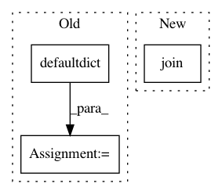

07de9b2aef3b5b9fe1970c8bee348bdf55cef5d9,synonyms/__init__.py,,,#,20
Before Change
import thulac // http://thulac.thunlp.org/
from collections import defaultdict
_vocab = defaultdict(lambda: [[], []])
_size = 0
_thulac = thulac.thulac() //默认模式
_fin = []
_fin_path = os.path.join(curdir, "data", "words.nearby.gz")
After Change
_size = 0
_thulac = thulac.thulac() //默认模式
_fin_path = os.path.join(curdir, os.path.pardir, "tmp", "words.nearby.gz")
_fin_cached_vocab_path = os.path.join(curdir, "data", "words.nearby.%d.pklz" % PLT)
if PLT == 2:
import cPickle as pickle
else:
In pattern: SUPERPATTERN
Frequency: 3
Non-data size: 3
Instances
Project Name: huyingxi/Synonyms
Commit Name: 07de9b2aef3b5b9fe1970c8bee348bdf55cef5d9
Time: 2017-10-20
Author: hailiang.hl.wang@gmail.com
File Name: synonyms/__init__.py
Class Name:
Method Name:
Project Name: googledatalab/pydatalab
Commit Name: 2137c84c95286a1c888140cf425c27ff087271bb
Time: 2017-04-21
Author: brandondutra@google.com
File Name: solutionbox/structured_data/mltoolbox/_structured_data/preprocess/local_preprocess.py
Class Name:
Method Name: run_numerical_categorical_analysis
Project Name: pantsbuild/pants
Commit Name: bb567f578ac20d7e6ef1990018a55f4f3bff61f6
Time: 2014-05-26
Author: itykaul@gmail.com
File Name: src/python/pants/tasks/detect_duplicates.py
Class Name: DuplicateDetector
Method Name: detect_duplicates_for_target